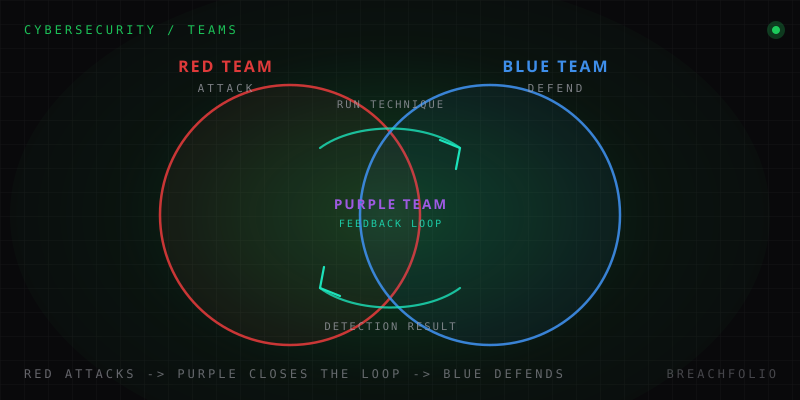

Red team, blue team, purple team: what each one actually does.
Three names you'll see in every job posting and almost no beginner guide explains cleanly. Here's what each team actually does day to day, and which one might be your career lane.
Open almost any security job posting and you'll see one of these three words in the title, or buried in the responsibilities section: red, blue, or purple. Job boards assume you already know what they mean. Most beginner guides skip straight past them into tool lists and certification paths. The result is that a lot of people spend months studying before anyone actually sits them down and explains, in plain terms, what a red teamer does on a Tuesday versus what a blue teamer does, and why "purple team" isn't really a team at all.
The color model is borrowed from military war-gaming – the attacking force is red, the defending force is blue – and it maps surprisingly cleanly onto security work. But the clean metaphor hides some important nuance, especially around authorization, which is the part that separates these jobs from crimes with the same skill set.
Red team: simulating a real adversary, on paper first
A red team's job is to think and act like a real attacker against the organization's own systems – using the same reconnaissance, exploitation, and post-exploitation tactics a criminal group or nation-state actor would use. That's the part everyone already associates with the name. What most beginner explanations leave out is the part that actually defines the job: none of it happens without an explicit, signed scope and Rules of Engagement (RoE) agreed in advance with the client or the organization's leadership.
The RoE spells out exactly what's in bounds and what isn't: which systems can be touched, which techniques are off-limits, who to call if something breaks, and what "stop" looks like. A red team engagement is not a free-for-all where anything goes as long as it works. It's a controlled simulation with a legal and contractual boundary around it, and staying inside that boundary, precisely, is a core professional skill, not an afterthought.
This is also where red teaming diverges from an unscoped penetration test, a distinction that trips up a lot of newcomers because both involve "hacking into things you're allowed to hack into." A penetration test is usually broader and shorter: find and document as many vulnerabilities as possible across a defined set of targets in a fixed window, then hand over a report. A red team engagement is usually narrower in scope but longer in duration, and the goal isn't coverage – it's realism. The team picks a plausible objective (reach the domain controller, exfiltrate a specific dataset, prove business email compromise is possible) and tries to get there the way a real adversary would: quietly, persistently, and while actively evading detection. A pentest asks "how many doors are unlocked?" A red team engagement asks "if someone really wanted in, would we even notice?"
Tooling reflects that goal. Red teamers work with exploitation frameworks like Metasploit for known-vulnerability testing, and with command-and-control (C2) frameworks – Cobalt Strike and its more modern, often more evasive alternatives – built specifically for the "stay quiet, stay persistent" phase of an engagement rather than the initial break-in. If you want a concrete sense of how two of these frameworks actually differ in practice, see our Metasploit vs Sliver comparison.
None of this is a technicality. Authorization – the signed scope, the RoE, the named point of contact – is the entire difference between a red teamer and a criminal running the exact same commands. Same tools, same techniques, sometimes the same mindset. The permission is the job.
Blue team: the day-to-day work of not getting breached
If red team work is episodic – engagements that start, run for a defined window, and end with a report – blue team work is the opposite: it's the everyday, ongoing job of monitoring, detecting, and responding that never really stops. Blue teamers live inside a SIEM (Security Information and Event Management platform) for most of the working day, watching alerts, tuning detection rules, and figuring out which of the hundreds of pings are noise and which one is real.
The role breaks down into a few concrete, recurring activities rather than one job description:
- Monitoring and triage. Watching dashboards and alert queues, deciding what's a false positive and what needs escalation – the bulk of a SOC analyst's day.
- Detection engineering. Writing and refining the rules and queries that turn raw logs into meaningful alerts, so the next real attack doesn't slip through as noise.
- Incident response. When something is confirmed, containing it, figuring out scope and root cause, and helping the organization recover – our first 24 hours of an incident checklist is a real look at this part of the job.
- Hardening. Closing the gaps found through monitoring or previous incidents before they get used again – patching, tightening configurations, reducing attack surface.
The platform underneath all of this varies a lot by organization and budget, and it's worth understanding the real tradeoffs before you specialize – see our Splunk vs Wazuh vs ELK comparison for how the major SIEM options actually differ in practice, not just on paper.

Purple team: not a third team, a feedback loop
Here's the part that trips up almost everyone new to this vocabulary: purple team is usually not a third standing department with its own headcount, sitting between red and blue on an org chart. In most organizations, it's a collaborative exercise or methodology: a deliberate practice of having red and blue work together in real time, rather than in the sequential, arm's-length way a traditional engagement usually runs.
In a classic red-vs-blue engagement, the red team attacks, the blue team defends (or fails to), and everyone finds out what happened when the final report lands weeks later. In a purple team exercise, the two sides are in the same room, or the same call, as it happens. The red team runs a specific technique and immediately says so; the blue team checks whether their detections fired, and if not, why not; both sides adjust and try the next technique. The point isn't secrecy or "winning" – it's compressing the feedback loop from weeks down to minutes, so the defensive gaps get identified and fixed while everyone still remembers exactly what caused them.
This is also why organizations that only ever run isolated red team exercises, without a real purple-team debrief, often don't actually improve their defenses much over time. A red team report that says "we got in this way" is valuable, but if the blue team never gets a structured, technique-by-technique walkthrough of what should have been detected and wasn't, the same class of gap tends to resurface in the next engagement with a different name. Purple teaming exists specifically to close that loop – it's a methodology aimed at making sure the lesson actually lands on the defensive side, not just a label for people who do "some of both."
The three, side by side
| Team | Goal | Typical day | Key skill | Authorization model |
|---|---|---|---|---|
| Red team | Prove a realistic attack path exists and see if it's detected. | Reconnaissance, exploitation, quiet persistence, careful adherence to scope. | Offensive technique plus discipline under a signed RoE. | Explicit, time-boxed, contractual – a defined start, end, and boundary. |
| Blue team | Detect, contain, and reduce the organization's exposure continuously. | SIEM monitoring, alert triage, detection tuning, incident handling. | Pattern recognition across noisy data, and calm under a real incident. | Standing, ongoing employment – no special engagement scope needed because defense is the default job. |
| Purple team | Close the gap between what red found and what blue actually detected. | (As an exercise) joint, technique-by-technique walkthroughs with both sides present. | Communication and facilitation as much as technical depth. | Inherits the red team engagement's scope, since it's built on top of one. |
Two related terms show up as this color model gets extended in larger organizations, worth knowing even in one sentence each: a "white team" acts as referee and scope owner in bigger exercises – the people who hold the RoE, settle disputes, and can call a halt – and a "yellow team" refers to developers and architects building security in at the source, rather than testing or defending it after the fact.
Which one is your lane?
None of these are better or more "elite" than the others – they reward genuinely different temperaments. Red team work suits people who enjoy open-ended problem-solving and can handle long stretches without a clear signal that something is working. Blue team work suits people who like pattern recognition, structure, and the satisfaction of catching something real in a sea of noise. Purple team work, since it's usually layered on top of a red or blue background rather than a separate entry point, suits people who also enjoy translating findings into something the other side can actually act on. If you're still mapping out where any of this fits into a broader study plan, our cybersecurity roadmap and careers guide covers the fuller path from fundamentals to a specific job title.
Frequently asked questions
What is the difference between red team and blue team?
Is purple team a separate job or a third team?
How is a red team engagement different from a penetration test?
What are white team and yellow team in cybersecurity?
Daniel A. and Óscar S. run Breachfolio, a small independent site about security and AI. This article was drafted with AI assistance and reviewed by a person before it went live. We write from documentation, vendor sources and published research rather than from original lab benchmarks, and we link a source in the sentence that relies on it. How we work · About us